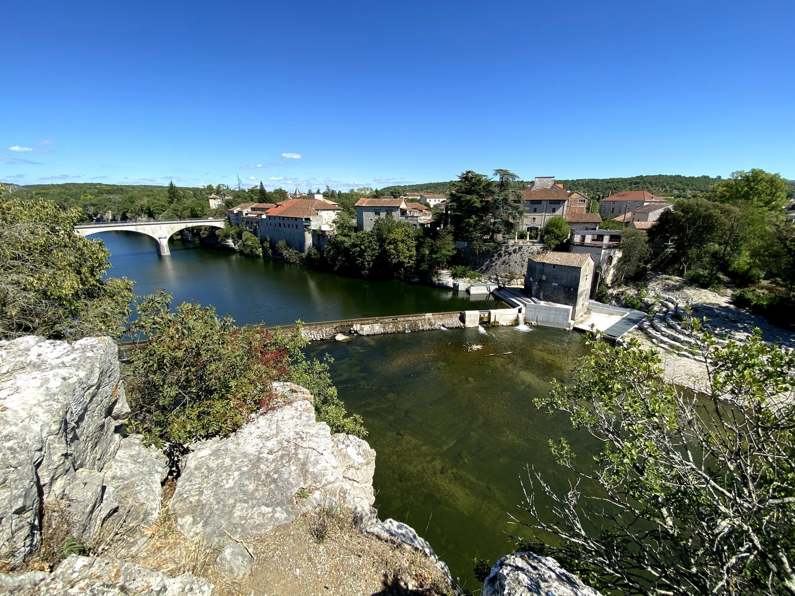
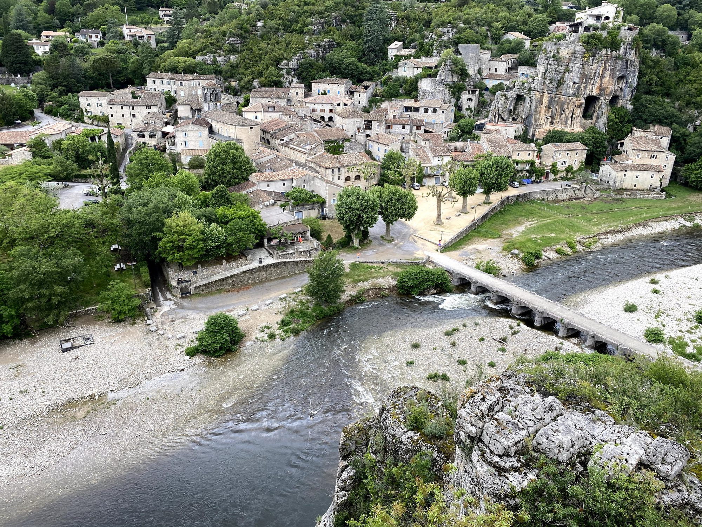

Op ongeveer vijftig minuten van Les Cabritas vormen Ruoms en Labeaume een duo van typische dorpen uit de Zuid-Ardèche, op minder dan 10 km van de Gorges de l'Ardèche en Vallon-Pont-d'Arc. Het ene imponeert met zijn stadswallen, het andere met zijn tuinen tegen de rotswand: twee aanvullende sferen voor één dagje uit.

Ruoms, het ommuurde dorp
Het dorp Ruoms, in de middeleeuwen gesticht en omringd door zijn oude stadswallen, verkent u het best te voet, door koele, schaduwrijke straatjes met balkons en terrassen vol bloemen. Hoogtepunten zijn een romaanse kerk uit de 14e eeuw, verschillende verdedigingstorens en het Musée Vinimage, gewijd aan de wijnen van de Ardèche. Net buiten het dorp loopt een spectaculaire weg uit de 19e eeuw, rechtstreeks in de rots uitgehouwen, door een reeks tunnels en bogen in de kalksteenwanden.
Labeaume, tuinen hoog boven de rivier
Een paar kilometer verderop betovert Labeaume met zijn stenen huizen aan de voet van hoge rotswanden en zijn tuinen op terrassen boven de bedding van de Beaume. De sfeer is hier intiemer en wilder dan in Ruoms, met een bijna geheime charme.

Goed om te weten voor uw bezoek
De twee dorpen zijn verbonden door een wandeling van ongeveer 9 km over de hoogten boven de rivier, afwisselend langs oude dorpen en natuur, met onderweg verschillende zwemplekken. Een mooie manier om beide bezoeken in één ochtend te combineren. Omdat Ruoms op minder dan 10 km van de Pont d'Arc ligt, kunt u 's middags makkelijk gaan zwemmen of kanoën in de Gorges de l'Ardèche.
Praktische informatie vanuit Les Cabritas
- Afstand vanaf Flaviac: ongeveer 50 min rijden
- Beste periode: mei tot september, om ook te kunnen zwemmen
- Ideaal voor: karaktervolle dorpen, makkelijke wandelingen, zwemmen in de rivier
Zin om Ruoms en Labeaume te ontdekken vanuit uw vakantiehuis in de Ardèche?
Les Cabritas verwelkomt u in Flaviac, in het hart van de Ardèche, voor een comfortabel verblijf met privézwembad, vlak bij de mooiste plekken van de streek.
Beschikbaarheid bekijken